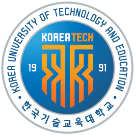
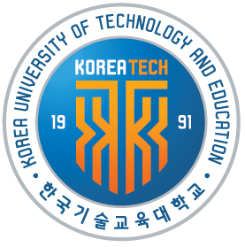

KOREATECH
KOREATECH is my college in my home country. There is a introducing my home country's college.

KOREATECH is my college in my home country. There is a introducing my home country's college.

KOREATECH dedicated to fostering highly competitive human resources through practical - training oriented engineering education, is inventing a new history in Korea’s engineering education.
Ranked No.1 in the job placement rate(86.6%, announced by the Ministry of Education in Jan, 2017)
KOREATECH offers a balanced curriculum with theory studies and practical training in a 50/50 ratio. We also have over 80 labs with the latest lab equipment for 4,500 students and students have 24 hours access to the labs for their research and study.
KOREATECH is presenting a new paradigm of Korea's college education with IPP, an industry-university cooperation-based educational model that answers Korea's unique demands.
Students can develop their skills and qualifications through practical training at corporations, practical training in junior and senior years with six month in the junior year and four months in the senior year, and also earn the competitive edge when making decisions on their future careers.